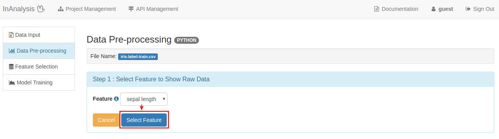
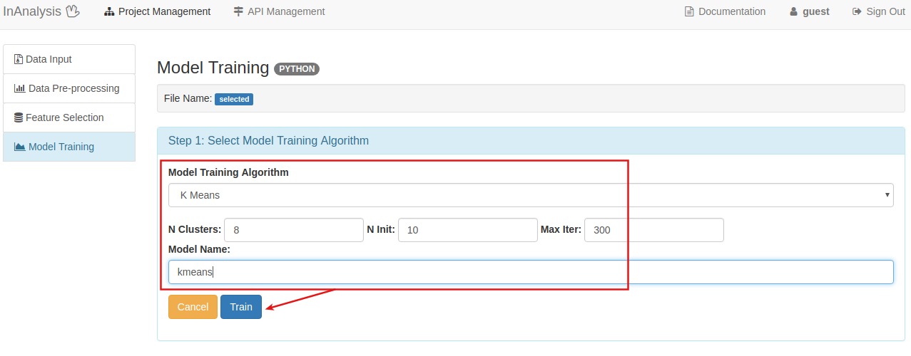
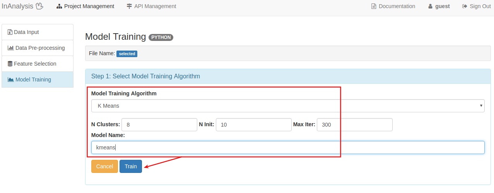

分群是把相似的對象通過靜態分類的方法分成不同的組別或者更多的子集（subset）， 這樣讓在同一個子集中的成員對象都有相似的一些屬性，常見的包括在坐標系中更加短的空間距離等。 一般把數據聚類歸納為一種非監督式學習。
機器學習畫布
 Machine Learning Canvas_Clustering
Machine Learning Canvas_Clustering
Value Propositions
由iris的sepal(萼片)長寬和petal(花瓣)長寬來將iris分群
Data Sources
UC Irvine Machine Learning Repository: Iris Data Set
Collecting Data
將iris.data中的class欄位刪除作為訓練檔
Features
資料欄位說明：
1. sepal (萼片) length in cm
2. sepal (萼片) width in cm
3. petal (花瓣) length in cm
4. petal (花瓣) width in cm
5. class:
-- Iris Setosa
-- Iris Versicolour
-- Iris Virginica
Building Models
將iris作為訓練檔，用kmeans演算法建立預測模型
模型訓練流程
0.Create Project and Data Input
建立Clustering專案
 Project Management： Select Project Type
Project Management： Select Project Type
檔案上傳
 Data Upload： Select Process Stage and Upload
Data Upload： Select Process Stage and Upload
1.Data Pre-process
從Function欄位中, 選擇Data Pre-processing按鈕, 進行資料預處理(Pre-process)
選擇資料要進行哪些處理並預覽

儲存處理過的資料
 Data Pre-process
Data Pre-process
2.Feature Selection
利用Pearson Correlation演算法計算各個Feature間的關係程度,以作為選擇Feature的參考
 Feature Selection
Feature Selection
 Show Feature Weight Matrix
Show Feature Weight Matrix
 Select Feature and Save
Select Feature and Save
3.Model Training
利用上傳的資料進行模型訓練
 Model Training

Set Parameters
Model Training

Set Parameters
 Preview Model
Preview Model